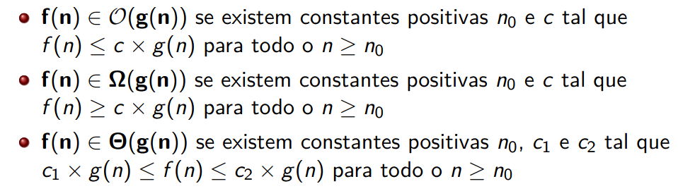
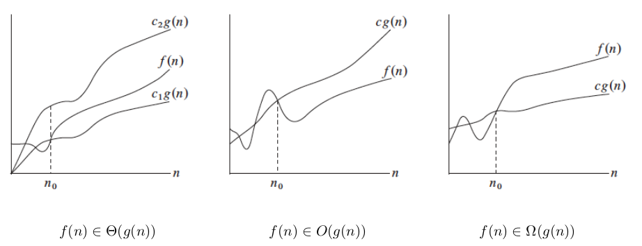
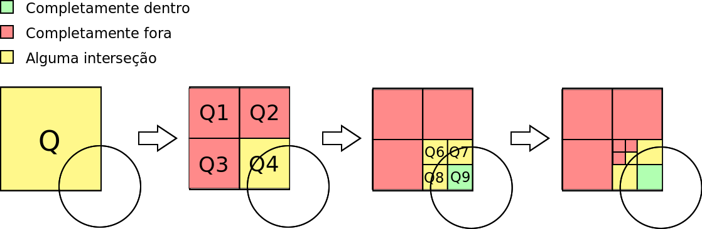
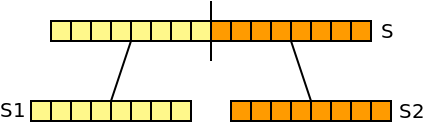

Agora que já fizemos alguns exercícios "em papel", voltemos ao "conforto" das implementações. Deve começar por ler o enunciado com atenção.
Para efeitos da nota atribuída à resolução de exercícios ao longo do semestre, os exercícios a submeter desta aula são:
Prazo de submissão: 3 de Abril (submeter no Mooshak de DAA)
Não se esqueçam que qualquer ajuda que tenham recebido de outros colegas deve ser reconhecida nos comentário do programa que submetem.
Depois do prazo os problemas continuarão disponíveis no Mooshak, mas as submissões não contarão para a sua nota. Relembre que cada aula vale 10% da nota desta componente.
Para um problema contar tem acertar todos os testes. Mesmo que resolva todos os problemas, o máximo numa aula é de 100%.
Nesta aula iremos abordar conceitos de análise assintótica. Será por isso conveniente ver o que foi falado nas teóricas:
Recorde a definição matemática da notação assintótica:


Para os pares de funções seguintes indique se é verdadeira ou falsa cada uma das seguintes afirmações: \(f(n) \in O(g(n))\), \(f(n) \in \Omega(g(n)\) e \(f(n) \in \Theta(g(n)\). Explique sucintamente as suas opções.
| (a) | \(f(n) = 2n^3 - 10n^2\) | \(g(n) = 25n^2 + 37n\) |
| (b) | \(f(n) = 56\) | \(g(n) = \log_2 30\) |
| (c) | \(f(n) = \log_3 n\) | \(g(n) = \log_2 n\) |
| (d) | \(f(n) = n^3\) | \(g(n) = 3^n\) |
| (e) | \(f(n) = n!\) | \(g(n) = 2^n\) |
| (f) | \(f(n) = n!\) | \(g(n) = n^n\) |
| (g) | \(f(n) = n \log n + n^2\) | \(g(n) = n^2\) |
| (h) | \(f(n) = \sqrt(n)\) | \(g(n) = \log_2 n\) |
| (i) | \(f(n) = \log_3 (\log_3 n)\) | \(g(n) = \log_3 n\) |
Imagine que tem dois programas implementando os algoritmos A e B, ambos tentando resolver o mesmo problema para um input de tamanho n. Quando medimos os seus tempos de execução para diferentes quantidades de input, obtivemos a seguinte tabela:
| Algoritmo | n=100 | n=200 | n=300 | n=400 | n=500 |
| A | 0.003s | 0.024s | 0.081s | 0.192s | 0.375s |
| B | 0.040s | 0.160s | 0.360s | 0.640s | 1.000s |
Para cada um dos seguintes pedaços de código a seguir indicados, indique qual a complexidade temporal correcta entre as seguintes hipóteses (explique sucintamente as suas opções):
\(\Theta(1)\),
\(\Theta(\log n)\),
\(\Theta(n)\),
\(\Theta(n \log n)\),
\(\Theta(n^2)\),
\(\Theta(n^2 \log n)\),
\(\Theta(n^3)\),
\(\Theta(n^4)\),
\(\Theta(2^n)\) ou
\(\Theta(n!)\)
for (int i=0; i<n; i++) for (int j=0; j<n; j++) count++; for (int i=0; i<n; i++) count++;
for (int i=0; i<n/2; i++) for (int j=0; j<42; j++) for (int k=n; k<n+5; k++) count++;
for (int i=0; i<n; i+=2) for (int j=1; j<n; j*=2) count++;
Agora que já fizemos alguns exercícios "em papel", voltemos ao "conforto" das implementações. Deve começar por ler o enunciado com atenção.
i) Uma solução naive em \( O(N \times F)\)
Comece por implementar a solução "óbvia": para cada foto fazer um ciclo entre \(A_i\) e \(B_i\) e somar as energias dos bakugans correspondentes.
Qual a complexidade desta solução? \(O(N \times F)\), pois para cada foto \(F\) faz um ciclo que no pior caso é de tamanho \(N\).
Submeta para verificar que não passa no tempo, sendo que nalguns casos obterá "Time Limit Exceeded" (neste problema o limite no Mooshak está em 2s)
Isto acontece porque no pior caso \(N=F=200000\), e \(2000002\) é demasiado! (ver slide 48)
ii) Medindo o tempo de execução
Experimente na sua máquina correr a solução trivial com os casos que a seguir lhe damos, e meça o tempo de execução (daa005_X.txt contém um caso com \(N=F=X\)):
Inputs: daa005_25000.txt
daa005_50000.txt |
daa005_100000.txt |
daa005_200000.txt
Exemplo de execução numa shell: time programa < daa005_X.txt > output.txt
(assumindo que o comando para executar o seu código é "programa")
Consegue perceber a taxa de crescimento do seu programa? Consegue estimar quanto tempo demoraria para por exemplo \(N=F=\)1 milhão?
iii) Melhorando a solução para \(O(N+F)\)
Um conceito muito interessante é o de "prefix sums", ou
como se costuma dizer por cá, "somas acumuladas" (ou
cumulativas).
Imaginemos por exemplo um array de números. As somas acumuladas são as somas totais até à posição respectiva. Por exemplo:
Posição i: 0 1 2 3 4 5 6 7
Array: 3 7 2 4 5 7 6
Soma acumulada: 0 3 10 12 16 21 28 34
Se tivermos armazenada a soma acumulada, que se pode calcular linearmente - \(O(N)\) - descobrir a soma de um dado intervalo faz-se em tempo constante - \(O(1)\). Por exemplo, se \(ac[]\) guardar a soma acumulada, a soma entre as posições \(a\) e \(b\) é igual a \(ac[b]-ac[a-1]\).
Isto pode ser usado para ajudar a resolver muitos problemas de forma mais eficiente, incluindo este problema dos Bakugans. Se as somas acumuladas forem calculadas, podemos responder a cada foto em \(O(1)\), o que faz com que a complexidade geral do programa fique a ser \(O(N+F)\), pois temos a leitura das energias, seguida da leitura das fotos, com resposta então em tempo constante para cada uma.
| INFORMAÇÃO IMPORTANTE PARA QUEM USA JAVA: Como pode ser preciso ler 600 mil inteiros (energias e fotos) e escrever 200 mil inteiros (as somas), para submeter com sucesso este problema será necessário ter input/output rápido em Java. No Mooshak iremos providenciar classes com esse propósito, pelo que devem ler a página de ajuda correspondente: Leitura e Escrita Rápida (C vs C++ vs Java) |
Vamos agora explorar outro conceito muito útil que abordado nas teóricas, resolvendo um com o paradigma de dividir para conquistar. Deve começar por ler o enunciado com atenção.
Uma possibilidade seria resolver o problema de forma analítica. Existem contudo muitos tipos de casos a considerar...
Vamos resolver este problema de forma uma forma completamente diferente, puramente algorítmica, usando então a ideia de dividir para conquistar. Vamos começar por pensar em quais são os casos mais fáceis. Se uma figura está completamente dentro da outra, a interseção é toda a sua área! Por outro lado, se está completamente fora, a interseção é 0:
O que fazer quando não acontecer um destes casos fáceis? Se queremos dividir para conquistar, temos de pensar em dividir. Se dividirmos o quadrado em quatro partes, temos agora quatro novos quadrados mais pequenos, onde o que queremos saber é precisamente um subproblema igual ao inicial!

Imagine-se que o caso era o representado em cima. O quadrado não é um caso simples, logo dividimos em quatro e chamamos a mesma recursão. Aqui, Q1, Q2 e Q3 são casos simples (completamente fora do círculo) e por isso devolvem 0. No caso de Q4 temos que novamente dividir em quatro. Dessa nova divisão, Q9 é simples (completamente dentro) e outros subquadrados não, pelo que iriamos novamente dividir em quatro recursivamente.
Quando é que devemos parar de dividir? Em cada passo os quadrados têm metade do lado do quadrado inicial, mas podem ficar "infinitamente" mais pequenos enquanto estivemos perto da borda do círculo... O que podemos fazer é parar... quando estivermos "satisfeitos" com a precisão obtida! Quanto mais fundo formos na recursão, mais preciso será o resulado, mas mais tempo demorará a recursão para terminar.
No final de tudo, deverá portanto ter uma função recursiva semelhante a esta:
intersecao(x1, x2, y1, y2) // quadrado de (x1,y1) até (x2,y2)
Se (uma figura está garantidamente fora da outra) então retornar 0
Se (quadrado dentro do círculo) então retornar área do quadrado
Se (círculo dentro do quadrado) então retornar área do círculo
area ← 0
Se (quadrado for ainda grande o suficiente) então
area ← area + intersecao(subquadrado superior esquerdo)
area ← area + intersecao(subquadrado superior direito)
area ← area + intersecao(subquadrado inferior esquerdo)
area ← area + intersecao(subquadrado inferior direito)
retornar area
Implemente esta solução e submeta-a no Mooshak (deverá obter 100 pontos).
Para consolidar os conhecimentos de notação assintótica, prove a verdade ou falsidade das seguintes afirmações, usando a definição matemática (dada em cima), :
Para cada uma dos seguintes funções recursivas indicadas, assumindo que chama no início f(v, 0, n-1), indique qual a recorrência que representa o seu tempo de execução, qual a complexidade temporal (notação \(\Theta\)) e justifique essa complexidade desenhando a respetiva árvore de recorrência (com os pesos associados a cada nível). Consegue perceber o que calculam as funções?
int f(int v[], int start, int end) { if (start==end) return v[start]; return v[start] + f(v, start+1, end); }
int f(int v[], int start, int end) { if (start==end) return v[start]; int middle = (start+end)/2; return f(v, start, middle) + f(v, middle+1, end); }
Tem disponível mais um problema para submissão onde a complexidade é importante e onde pode testar os seus conhecimentos na paradigma de de dividir para conquistar.
Este problema já foi usado em Estruturas de Dados em 2021/2022 (ver exercício 4 da aula #09). Se for ver essa explicação poderá ver explicadas soluções com complexidade cúbida, quadrática e linear.
A ideia aqui é implementar uma solução \(O(n \log n)\) que usa a ideia de dividir para conquistar. Imagine que inicialmente tem uma sequência S. Podemos dividir a sequência em duas metades S1 e S2:

Seja a subsequência de maior soma indicada pela sigla SMS. Então, podemos dizer que SMS(S) é igual ao máximo entre:
SMS(S1) e SMS(S2) são subproblemas do mesmo tipo do primeiro e podem ser resolvidos chamando a mesma função recursivamente!
Como calcular (iii)? Se pensar bem, basta considerar a melhor sequência que termina no último elemento de S1 e juntá-la à melhor sequência que começa no primeiro elemento de S2! É fácil obter isto em tempo linear (ex: para saber a melhor sequência desde o início de S2 basta começar no primeiro elemento e ir adicionando elementos, guardando o melhor).
O seu código deverá portanto no final ter uma função recursiva semelhante a esta:
sms(v, a, b) // subsequência de maior soma do array v[] entre as posições a e b Se (a==b) então retornar v[a] meio ← (a+b)/2 best1 ← sms(v, a, meio) best2 ← sms(v, meio+1, b) best3 ← melhor sequência que começa na primeira metade e termina na segunda metade retornar maximo(best1, best2, best3)
A complexidade será semelhante ao mergesort, com a recorrência a ser \(T(n) = 2T(n/2) + \Theta(n)\) (que como vimos nas teóricas dá \(\Theta(n \log n)\). Note que para isto acontecer best3 tem de ser calculado em tempo linear, como atrás descrito.
Implemente esta solução e submeta-a no Mooshak (deverá obter 100 pontos).
| INFORMAÇÃO IMPORTANTE PARA QUEM USA JAVA: Como pode ser preciso ler 200 mil inteiros (energias e fotos), para submeter com sucesso este problema será necessário ter input/output rápido em Java. No Mooshak iremos providenciar classes com esse propósito, pelo que devem ler a página de ajuda correspondente: Leitura e Escrita Rápida (C vs C++ vs Java) |
Todas as semanas vou colocar disponível pelo menos mais um exercício um pouco mais desafiante.
Para esta semana o desafio tem a ver com a eficiência algorítmica e como desenhar um algoritmo que seja \(O(n^3)\) para o seguinte problema, que está disponível para submissão no Mooshak:
Como pode usar e extender as ideias que já aprendou ou recordou nesta aula? Como este é um problema de desafio, não vou para já dar mais dicas :)
Se já tiverem feito tudo e estiverem "presos" neste, e quiserem mesmo fazer o desafio, podem contactar-me para eu "dosear" as dicas, sabendo que este problema é substancialmente mais difícil que os outros desta aula.